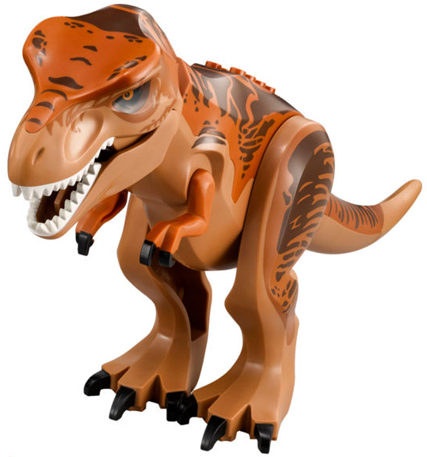

Le dinosaure Tyrannosaurus Rex, plus connu sous le nom de Tyrannosaure ou T rex, est incontestablement à la fois le plus célèbre des dinosaures, mais aussi celui qui a la réputation d’avoir été le plus féroce d’entre eux. Le Tyrannosaure était probablement le plus grand dinosaure carnivore. Son nom signifie «Roi des reptiles tyrans». Il a vécu à la fin du crétacé entre 68 et 65 millions d’années avant notre ère, en Amérique du Nord, en Chine et en Mongolie. Le Tyrannosaure était bipède, pourvu de très petits bras et d’une queue suffisamment longue pour lui servir de balancier. Il pouvait facilement atteindre 12 à 14 mètres de long, 5 à 6 mètres de hauteur pour un poids fleuretant avec les 7 tonnes. 